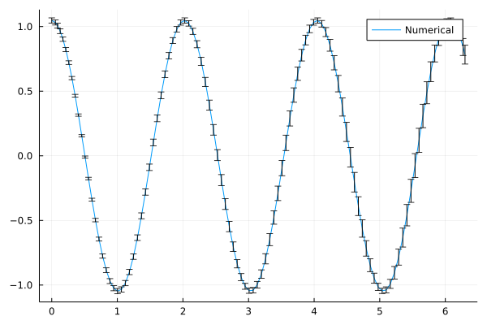

Motivation¶
Questions
What is the two-language problem?
How performant is Julia?
What is composability?
What will we learn and not learn in this lesson?
Instructor note
15 min teaching
Why was Julia created?¶
Julia has been designed to be both fast and dynamic. In the words of its developers:
We want a language that’s open source, with a liberal license. We want the speed of C with the dynamism of Ruby. We want a language that’s homoiconic, with true macros like Lisp, but with obvious, familiar mathematical notation like Matlab. We want something as usable for general programming as Python, as easy for statistics as R, as natural for string processing as Perl, as powerful for linear algebra as Matlab, as good at gluing programs together as the shell. Something that is dirt simple to learn, yet keeps the most serious hackers happy. We want it interactive and we want it compiled. (Did we mention it should be as fast as C?)
From Why We Created Julia by Jeff Bezanson, Stefan Karpinski, Viral B. Shah and Alan Edelman.
Speed¶
Many researchers and programmers are drawn to Julia because of its speed. Indeed, Julia is among the few languages in the exclusive petaflop club along with C/C++ and Fortran.

Micro-benchmarks comparing Julia with many other languages. Taken from the Julia benchmarks section.¶
The two-language problem¶
Combining languages
Have you ever written and prototyped code in a high-level language and then found it necessary to rewrite or port it to a different language for performance?
To run code in any programming language, some sort of translation into machine instructions needs to take place, but how this translation takes place differs between programming languages:
Interpreted languages like Python (to some level) and R translate instructions at runtime;
Compiled languages like C/C++ and Fortran are translated by a compiler prior to running the program.
The benefits of interpreted languages are that they are easier to read and write because less information on aspects like types and array sizes needs to be provided. Programmer productivity is thus generally higher in interpreted languages. Compiled languages, while generally being clunkier to write, can achieve much better performance. This is due to the fact that the programmer usually needs to specify the types (and possibly sizes) of variables, and the compiler can apply clever optimisations when translating to machine code.
In many ways Julia looks like an interpreted language, and mostly behaves
like one. But before each function is executed, Julia’s LLVM compiler will
compile it just in time" (JIT). Thus you get the flexibility of an
interpreted language and the execution speed of the compiled language at the
cost of waiting a bit longer for the first execution of any function. Indeed,
when packages are first added and instantiated in Julia, they are precompiled,
and the user has to wait for that process to happen. This longer TTFP (time to
first plot) used to be a pain point in Julia, but the user experience has been
greatly improved by optimising which code paths are pre-generated.
Composability¶
Julia is highly composable, which means that by writing generic code, components (packages) that have been developed independently can simply be used together and the result is exactly what you would expect.
A well known example is the interplay between DifferentialEquations.jl, a package for solving differential equations, and Measurements.jl, a package for working with magnitudes where uncertainties are explicitly reckoned.
Here’s an example solving the simple pendulum equation (adapted from https://tutorials.sciml.ai/):
using DifferentialEquations, Measurements, Plots
g = 9.79 ± 0.02; # Gravitational constants
L = 1.00 ± 0.01; # Length of the pendulum
#Initial Conditions
u₀ = [0 ± 0, π / 3 ± 0.02] # Initial speed and initial angle
tspan = (0.0, 6.3)
#Define the problem
function simplependulum(du,u,p,t)
θ = u[1]
dθ = u[2]
du[1] = dθ
du[2] = -(g/L) * sin(θ)
end
#Pass to solvers
prob = ODEProblem(simplependulum, u₀, tspan)
sol = solve(prob, Tsit5(), reltol = 1e-6)
plot(sol.t, getindex.(sol.u, 2), label = "Numerical")
The result is a plot of the solution to the differential equation with error bars!

Drawbacks and workarounds¶
Time to first plot: as mentioned earlier, if you open the Julia REPL and
type in a plotting command, it will take a few seconds for the plot to appear
because Julia needs to precompile the fairly large Plots.jl package. This
makes Julia unsuitable for small scripts that get called frequently to perform
light work.
Workaround 1: use instead long-running REPL sessions/kernels
Workaround 2: package authors can use PrecompileTools.jl to compile in advance the most used code paths, which makes for a better user experience.
Generally speaking, this is a lesser issue compared to earlier Julia versions, due to a number of optimisations integrated at both the language and packaging levels, e.g. by using images which include the most used packages.
Ecosystem: The ecosystem of packages is less mature than e.g. Python and R, so you might not find a package that corresponds exactly to your favorite package in another language.
Workaround 1: It’s straightforward to use external libraries written in Python or R
Workaround 2: Writing fast Julia code is easy and fun, so you might consider writing your own version!
Rapid package evolution: Although most major packages have stabilized, there are still many packages that go through frequent large changes that can break your code.
Workaround: Julia comes with a powerful package manager and in-built support for isolated software environments where dependencies can be recorded exactly. Reproducibility is made very easy.
What you will learn¶
Julia’s syntax and language constructs.
What’s different in Julia compared to most other languages.
Tooling for writing Julia.
How to efficiently develop Julia modules and packages and write unit tests.
Which packages exist in Julia across many scientific domains.
This lesson focuses on the basics of the Julia language and how to get started with efficiently developing in Julia. If you want to go further and learn about how Julia can be used for high performance computing (HPC) and data science / high performance data analysis, we recommend the following two ENCCS lessons:
This lesson should be seen as the starting point for learning the ins and outs of the Julia language. Make sure to go through the recommended additional reading at the end of each episode to learn more.
See also¶
Jeff Bezanson Stefan Karpinski Viral B. Shah Alan Edelman. Why We Created Julia